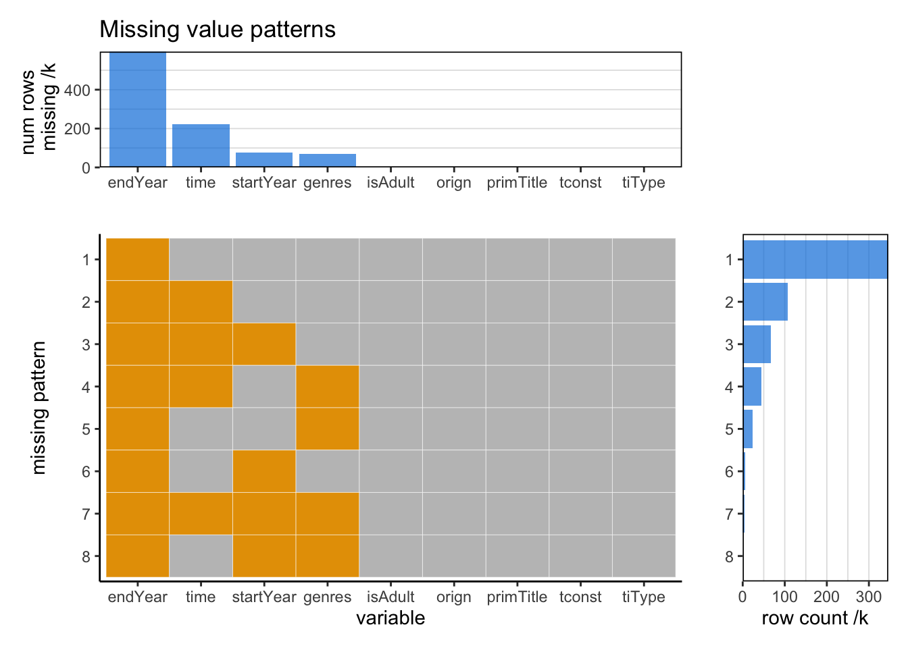
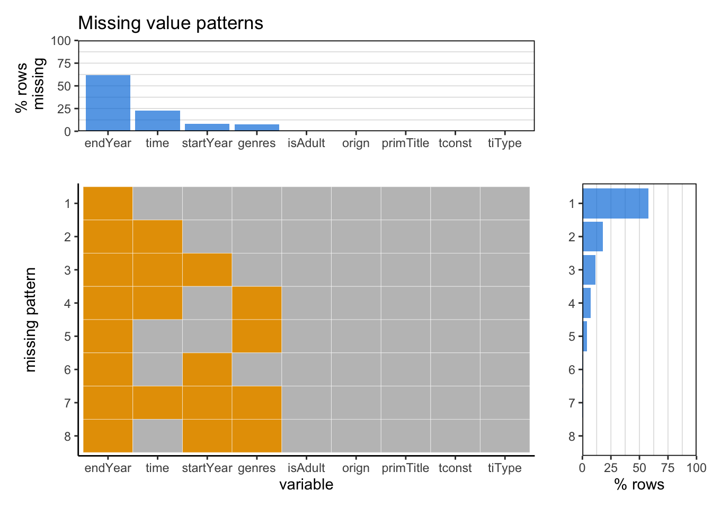

Chapter 4 Missing values
4.1 title.bacis
4.1.1 Missing values by column
## endYear runtimeMinutes startYear genres tconst
## 595969 221125 76468 71052 0
## titleType primaryTitle originalTitle isAdult
## 0 0 0 04.1.2 Missing patterns


From the graph, we can see that there are no missing values in columns nconst and primaryName. Most missing values are in columns deathYear and birthYear. This might be due to the difficulty of getting the specific birth and death time and the fact that some people are not dead. Only a minority of missing values are in columns primaryProfession and knownForTitles. Furthermore, deathYear and birthYear are both missing in most rows with missing data. It might be due to the high correlation between these 2 columns. Only a very small proportion of rows have no missing values.